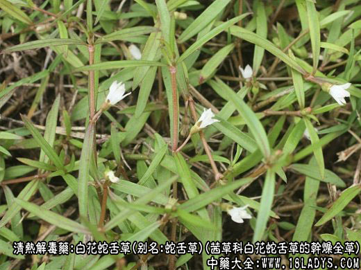
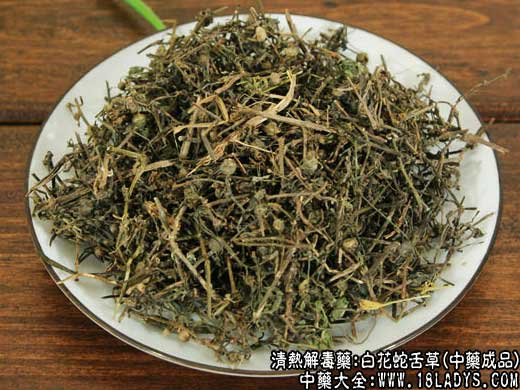
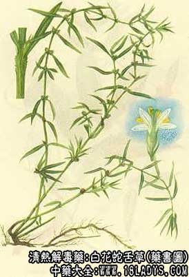

别名：蛇舌草、羊须草、蛇总管
来源：为茜草科植物白花蛇舌草的干燥全草。
植物形态：一年生细弱草本，高约10～30厘米，茎纤细有节，节处分枝，直立或匍匐。叶对生，钱状披针形，全缘无柄，托叶合生，膜质，齿裂。花白色，单生于叶腋，有短柄。蒴果小球形，内含种子多枚。
产地：主产于广东、福建、广西、湖南、江西、四川等省。江南各省多分布。
性状鉴别：全草（包括细毛状须根，根茎及地上茎、叶果实等）已皱缩成团状或结扎成把。全体灰褐色或褐色。叶片多已破碎。多数黄褐色小蒴果着生于节上。质脆易碎断，气微香，味微苦。
以全株褐色，无杂草者为佳。
主要成分：含七种结晶物质，机三十一烷、豆甾醇、乌苏酸、土当归酸、β-固甾醇等。
药理作用：清热三瘀、消痈解毒，但体外试验抗菌作用不甚显著，只对金黄色葡萄球菌、痢疾杆菌有微弱的抗菌作用。另一方面，有动物实验证明，白花蛇舌草能提高吞噬细胞的功能，其抗感染的作用可能与此有关。
炮制：切咀，生用。
性味：甘，淡，凉。
归经：入肝，肾经。
功效：清热解毒，活血利尿。
主治：急性阑尾炎、肠炎、扁桃体腺炎、泌尿系感染、肠癌、肝癌、鼻咽癌等。
临床应用：
1、治急性阑尾炎（单纯性）：用单味白花蛇舌草60g，谁煎服，每日2～3次，疗效较好。
2、治急性肾炎，有浮肿，小便有蛋白，配车前草，栀子、茅根等，方如白车汤，此方尤其适用于治小儿肾炎，对消肿效果较好。
3、治尿道炎、膀胱炎，配车前草、银花、黄柏等。
4、治盆腔炎，配入地金牛、穿破石，方入盆炎汤，效果良好。
5、治蛇咬伤，青竹蛇咬伤后，以白花蛇舌草15～30g（鲜、干品均可），白酒半斤煎服，煮沸3～5分钟，分2～3次服完。
6、试用于癌症治疗，可于治癌方剂内加入白花蛇舌草30～60g，疗效待进一步观察。
用量：15～60g，治癌可用至75～150g。
处方举例：
1、白车汤：白花蛇舌草15g，车前草15g，山栀子9g，茅根30g，紫苏叶6g，水煎服。
2、盆炎汤：白花蛇舌草45g，入地金牛9g，穿破石15g，水煎服。
注：据江西药科学校中草药学196页记载：“另有伞房花儿草（伞花蛇舌草）民间常和白花蛇舌草一起混用。两者主要区别是伞房花耳草的花2～5朵排成伞房状，腋生；而白花蛇舌草的花单生叶腋中，两者效用是否相同，有待进一步研究。”